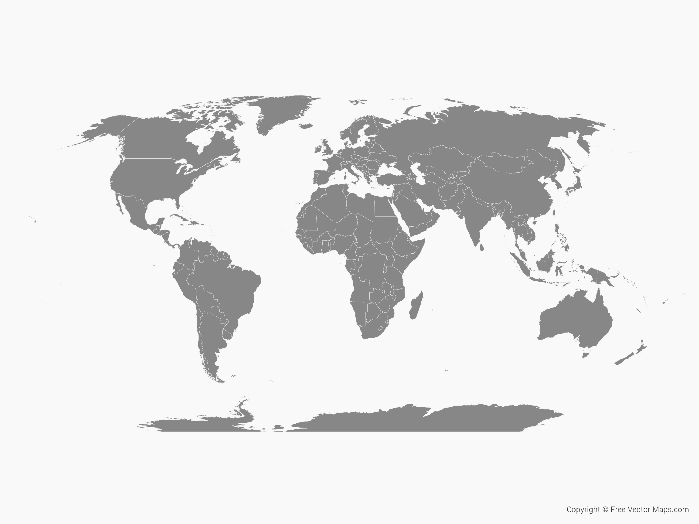

Ang Usang Kapitulo (Anib)
Ang Sugbo sa Pilipinas. Ang Pilipinas sa Asya. Ang Tsina sa Asya. Ang Pilipinas ug ang Tsina sa Asya. Sa Asya ang Malaysia sab. Ang Pilipinas ug ang Tsina ug ang Malaysia sa Asya.
Dili sa Asya ang Mehiko. Ang Mehiko sa Amihanang Amerika. Dili sa Amihanang Amerika ang Indya. Sa Asya ang Indya. Dili sa Asya ang Espanya, apan sa Uropa. Ang Pransia sab sa Uropa. Sa Uropa ang Espanya ug ang Pransia. Dili sa Uropa, ang Ehipto, apan sa Aprika. Ang Kenya sab sa Aprika. Ang Ehipto ug ang Kenya sa Aprika.
Sa Asya ba ang Tsina? Oo, ang Tsina sa Asya. Sa Tsina ba ang Sugbo? Dili sa Tsina ang Sugbo. Asa ang Sugbo? Ang Sugbo sa Pilipinas. Asa ang Pilipinas? Ang Pilipinas sa Asya. Asa ang Tsina ug ang Pilipinas? Ang Pilipinas ug ang Tsina sa Asya.